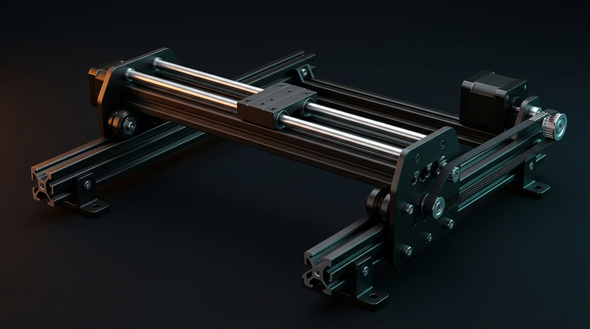
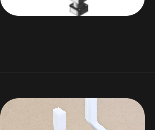
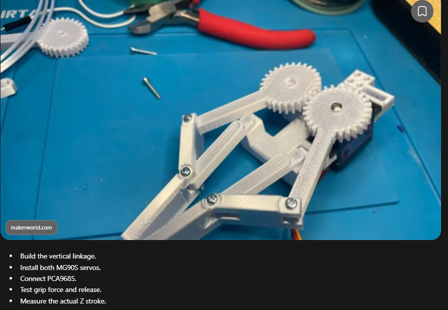
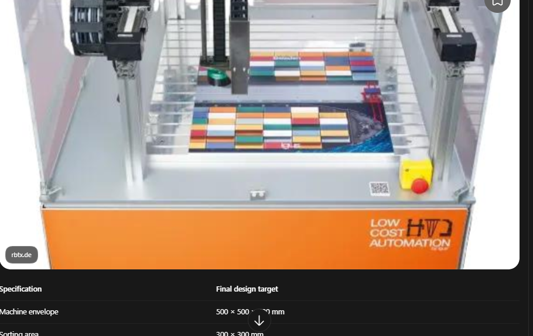

Consolidated V2 dual-controller architecture where a single Raspberry Pi Zero 2 W (16 GB microSD) coupled with an 8MP IMX219 160° Wide-Angle CSI Camera (or USB Webcam) replaces both the Teensy 4.1 and ESP32-CAM—performing direct high-speed capture, OpenCV fisheye undistortion, HSV segmentation, and homography before dispatching coordinate batches to the Arduino Mega 2560.
cv2 + NumPy at 640×480 RGB888 (4× higher spatial resolution than V1 QVGA).
cv2.fisheye.initUndistortRectifyMap corrects radial barrel distortion from the 160° FOV lens in ~5 ms prior to 3×3 planar homography.
Consolidates image capture and vision compute into a single Raspberry Pi Zero 2 W while keeping deterministic motion safety on the Arduino Mega 2560.
Compact self-contained tabletop footprint constructed with 2020 aluminum extrusions. The 160° wide-angle lens allows flexible top camera mounting from 220–450 mm height.
Engineered to handle common plastic beverage bottle caps with outer diameter between Ø28 mm and Ø32 mm across 4 color classes.
10 × 10 sorting grid (30 mm pitch) with matte neutral background and 4 corner fiducial markers for OpenCV homography calibration.
Raspberry Pi Zero 2 W directly captures frames from the 8MP IMX219 CSI camera (or USB webcam), undistorts fisheye curvature, segments HSV masks, and computes mm coordinates.
Two NEMA 17 stepper motors on GT2 belts move the gantry; two MG90S metal-gear servos control vertical stroke and parallel gripper jaws.
Four color-coded bins (Red, Yellow, Green, Blue) positioned outside the active grid area for unobstructed sorting.
Boots headless Raspberry Pi OS Lite (64-bit) with Wi-Fi disabled. Auto-starts the Python OpenCV sorting service via systemd with zero internet dependency.
If UART communication between Pi Zero 2 W and Mega drops mid-pick, the Mega autonomously finishes depositing the held cap, retracts Z, and parks safely.
Click the 300×300 mm grid to add/remove caps, run the Pi Zero 2 W OpenCV scan & nearest-neighbor sort, and test UART interruption fail-safe recovery.
Instead of three programmable boards (ESP32-CAM + Teensy 4.1 + Arduino Mega), V2 uses a streamlined two-processor topology: the Raspberry Pi Zero 2 W handles camera capture and OpenCV computer vision, while the Arduino Mega 2560 guarantees hard-real-time stepper pulse timing and physical safety.
| Component / IC | Hardware Specs | Primary Responsibility in V2 | Interface Bus | Operating Voltage |
|---|---|---|---|---|
| 8MP IMX219 Camera (or USB OTG Webcam) |
Sony IMX219 8MP Sensor • 160° Wide-Angle FOV Lens | Direct top-down image acquisition of the 300×300 mm board at 640×480 / 1280×720 RGB888 (30 FPS capable). | 22-Pin MIPI CSI-2 (or Micro-USB OTG) |
3.3V / 1.8V CSI Rail |
| Raspberry Pi Zero 2 W (Replaces Teensy + ESP32) |
Quad-Core 64-bit ARM Cortex-A53 @ 1.0 GHz • 512 MB RAM • 16 GB microSD | Captures camera frame via Picamera2, executes OpenCV 160° fisheye undistortion, HSV color segmentation, contour circularity gating, 3×3 homography, and transmits batch sorting plans to Mega. |
MIPI CSI-2 In & GPIO 14/15 UART0 Out |
5V Input / 3.3V GPIO |
| Arduino Mega 2560 | ATmega2560 @ 16 MHz (8 KB SRAM) | Receives coordinate batch from Pi Zero 2 W, generates deterministic STEP/DIR pulse trains, polls X/Y/Z NC limit switches & E-stop sense, sequences PCA9685 servos, and enforces comms-loss fail-safe halt. | UART1 (Pins 18/19) & Hardware I2C (20/21) |
5V Logic |
| PCA9685 | 16-Channel 12-Bit PWM (I2C) | Generates jitter-free 50 Hz hardware PWM timing for the two MG90S servos (Z-axis linkage & gripper jaws). | I2C (SDA/SCL) | 5V Logic / 5V V+ |
| TMC2208 × 2 | Trinamic SilentStepStick Driver | Drives the X and Y NEMA 17 stepper motors with StealthChop2 silence at 1/8 microstepping (40 steps/mm + 1/256 internal MicroPlyer interpolation). | STEP / DIR / EN | 12V VMOT / 5V VIO |
Captures 640×480 / 1280×720 RGB888 frames of the 300×300 mm workspace in ~20 ms
Picamera2 / V4L2 ⟶ 160° Fisheye Undistort ⟶ OpenCV HSV Masks ⟶ Contours ⟶ 3×3 Homography ⟶ Path Planner
packet_protocol.h), CRC16 Verification, Heartbeat & ACK
Coordinates ⟶ STEP/DIR Pulses ⟶ PCA9685 Servo PWM ⟶ 8-Step Pick & Place ⟶ Comms-Loss Recovery
Identical 500×500×500 mm Cartesian gantry mechanics as V1, enhanced with top-bar mounting for the Pi Zero 2 W and 8MP IMX219 160° wide-angle lens.





Replaces Teensy 4.1 & ESP32-CAM with your already-owned Raspberry Pi Zero 2 W (16 GB microSD) plus the 8MP IMX219 160° camera module (Robu.in ₹1,489) and 22-pin Pi Zero CSI cable.
| # | Component Name | Specification / Details | Qty | Function in V2 System | Procurement Status |
|---|---|---|---|---|---|
| 01 | Raspberry Pi Zero 2 W + 16GB SD | Quad-Core Cortex-A53 @ 1 GHz, 512 MB RAM, 16 GB Class 10 microSD | 1 | Replaces Teensy 4.1 & ESP32-CAM: Camera capture, OpenCV vision, homography, path planning | Already Owned |
| 02 | Arduino Mega 2560 | ATmega2560 @ 16 MHz, 54 Digital I/O, 4 Hardware UARTs | 1 | Deterministic stepper pulse generation, homing & polled X/Y/Z NC limits + E-stop sense, servo sequencing, fail-safe halt | Already Owned |
| 03 | PCA9685 Board | 16-Channel 12-bit PWM generator (I2C) | 1 | Jitter-free 50 Hz servo signal generation | Already Owned |
| 04 | MG90S Servo | Metal-gear micro servo (1.8–2.2 kg-cm) | 2 | Z-axis vertical stroke & Gripper clamp | Already Owned |
| 05 | 12V 10A SMPS | 120W switched-mode power supply | 1 | Master DC system power source | Already Owned |
| 06 | LED Light Plate | Uniform diffused illumination panel | 1 | Eliminates shadow/glare on glossy plastic caps | Already Owned |
| 07 | 8MP IMX219 160° Camera Module | Sony IMX219 8MP Wide-Angle 160° FOV (Robu.in ₹1,489) or USB Webcam | 1 | High-resolution top-down workspace acquisition into Pi Zero 2 W | To Purchase (~₹1,489) |
| 08 | Pi Zero 22-Pin to 15-Pin CSI Cable | 15 cm / 30 cm FFC Adapter Ribbon (0.5mm 22-pin to 1.0mm 15-pin) | 1 | Adapts standard 15-pin IMX219 camera to Pi Zero 2 W's 22-pin CSI connector | To Purchase (~₹69) |
| 09 | NEMA 17 Stepper Motors | 40 mm body, 1.3 A, ~4.2 kg-cm torque | 2 | X and Y Cartesian gantry travel | To Purchase |
| 10 | TMC2208 V1.2 Drivers | SilentStepStick with aluminum heatsink | 2 | Smooth, quiet stepper motor driving | To Purchase |
| 11 | GT2 Belt & 20T Pulleys | 6 mm width, 2 mm pitch, 5 mm bore pulleys | 2 sets | Precision linear belt drive transmission | To Purchase |
| 12 | 2020 Aluminum Extrusion | V-slot / T-slot profiles cut to size | 1 set | Rigid 500×500×500 mm frame structure | To Purchase |
| 13 | Linear Rails or V-Wheels | Delrin V-wheel kits or MGN12H rails | 2 axis sets | Low-friction linear guidance for X & Y | To Purchase |
| 14 | 5V 5A Buck Converter | High-efficiency step-down (12V ⟶ 5V; verify exact IC & servo voltage rating) | 1 | Separate regulated high-current branch for servos (common star GND) | To Purchase |
| 15 | 5V 3A Logic Buck | Regulated step-down for Pi Zero 2 W & Mega (verify exact SKU) | 1 | Separate regulated 5V branch for Pi Zero 2 W, IMX219, and Mega 5V pin | To Purchase |
| 16 | Logic Level Shifter | 4-channel bidirectional (5V ⇄ 3.3V) | 1 | Shifts BOTH TXD0 & RXD0 (Pi Zero 2 W has no 5V-tolerant pins) | To Purchase |
| 17 | NC Limit Switches & Dual-Pole E-Stop | Roller-lever NC microswitches + dual-pole latching NC E-Stop (rated ≥10A DC) | 3 switches + 1 | X/Y/Z NC limits, hardwired 12V actuator cutoff & Pin 25 sense | To Purchase |
Validate the Pi Zero 2 W OpenCV + 160° IMX219 vision stack on the bench first, then integrate with the Arduino Mega motion gantry.

fisheye_calibrate.py to save K, D, H matrices
/dev/serial0) to Mega Serial1 via shifterstruct.pack) with CRC16
capsorter_vision.service systemd auto-startDetailed computer vision algorithms, electrical schematics, searchable pinout matrices, fail-safe state machines, production source code, and hardware guidelines are hidden by default to keep the main page streamlined. Click any module below or use the Engineering tab in the top bar to inspect them on demand.
Executing locally on the Pi Zero 2 W's Quad-Core 1 GHz Cortex-A53 with 512 MB RAM and 16 GB microSD storage.
Frame Size: 921,600 Bytes (~900 KiB) — 4× higher pixel count than V1.
Capture Latency: ~18–25 ms via MIPI CSI-2 (Picamera2) or USB V4L2, replacing V1's 1.67s UART transfer.
Provides 512× more RAM than Teensy 4.1 (1 MB).
Headless Raspberry Pi OS Lite + Python 3 + OpenCV + precomputed fisheye LUTs consume ~145 MB, leaving >360 MB free.
OS + python3-opencv + picamera2 + numpy use ~2.8 GB.
Stores calibration.npz (K, D, H matrices) and optional offline diagnostic snapshots.
Explore each stage of the Python OpenCV pipeline running on Raspberry Pi Zero 2 W.
The Pi Zero 2 W acquires a 640×480 NumPy array directly from the 8MP IMX219 camera using Picamera2 with locked exposure and white balance (or automatically falls back to cv2.VideoCapture(0) if a USB webcam is plugged into the OTG port).
Three separate regulated power branches sharing a single-point star ground (not galvanically isolated) feed the Pi Zero 2 W, Mega, servos, and steppers.
Direct 12V supply routed to both TMC2208 VMOT power inputs, equipped with 100 µF low-ESR decoupling capacitors.
Dedicated high-current buck converter feeds PCA9685 V+ power terminal. Absorbs sudden 1.5A stall current spikes from gripper jaws.
Separate regulated 5V logic rail (common star GND — not galvanically isolated) powering Raspberry Pi Zero 2 W, Arduino Mega 5V pin, and PCA9685 VCC. Combined 5V/5A + 5V/3A = 40W rated (~45–47W at 12V input); verify buck efficiency, wire gauges, fuses & connectors.
TX1 5V) directly to Pi Zero 2 W Pin 10 (GPIO 15 / RXD0) will permanently damage the Pi SoC. Always route UART through the 4-channel bidirectional logic level shifter (HV=5V, LV=3.3V).
| Subsystem | Source Pin | Destination Pin | Signal Description | Voltage Level | Safety Notes |
|---|---|---|---|---|---|
| IMX219 Camera ⟶ Pi Zero 2W | 15-Pin Camera FPC | 22-Pin Pi Zero CSI Port | 2-Lane MIPI CSI-2 Raw Frame Stream + I2C Control | 1.8V / 3.3V CSI | Requires 15-to-22 pin Pi Zero ribbon cable |
| 5V 3A Logic Buck ⟶ Pi Zero 2W | Buck 5V+ & GND | Header Pin 2/4 (5V) & Pin 6 (GND) | Regulated 5V DC Power to Raspberry Pi Zero 2 W | 5.0V ± 0.1V DC | Or feed via Micro-USB PWR IN port |
| Pi Zero 2W ⟶ Level Shifter | Header Pin 1 (3.3V) | Level Shifter LV Ref | Low-Voltage Reference for 3.3V Side of Shifter | 3.3V Ref | Common GND with Mega required |
| Pi Zero 2W ⟶ Mega | Pin 8 (GPIO14 / TXD0) | Shifter LV1 ⟶ HV1 ⟶ Mega Pin 19 (RX1) | Sorting Plan Batch Packets & Heartbeat (115,200 Baud) | 3.3V ⟶ Shifter ⟶ 5V | Disable Linux serial console in raspi-config |
| Mega ⟶ Pi Zero 2W | Mega Pin 18 (TX1) | Shifter HV2 ⟶ LV2 ⟶ Pin 10 (GPIO15 / RXD0) | Execution ACK, Batch Done & Fault Telemetry | 5V ⟶ Level Shifter ⟶ 3.3V | MANDATORY Level Shifter on Mega TX1! |
| Mega ⟶ TMC2208 (X) | Mega Pin 2 | X Driver STEP Pin | X-Axis Step Pulse Train (40 steps/mm, 370mm range) | 5V VIO | 2800 steps/s max speed (70 mm/s nominal on 16 MHz AVR; measure actual travel) |
| Mega ⟶ TMC2208 (X) | Mega Pin 5 | X Driver DIR Pin | X-Axis Direction Toggle | 5V VIO | CW / CCW rotation |
| Mega ⟶ TMC2208 (Y) | Mega Pin 3 | Y Driver STEP Pin | Y-Axis Step Pulse Train (40 steps/mm, 300mm range) | 5V VIO | Moving bridge actuator (2800 steps/s = 70 mm/s nominal) |
| Mega ⟶ TMC2208 (Y) | Mega Pin 6 | Y Driver DIR Pin | Y-Axis Direction Toggle | 5V VIO | CW / CCW rotation |
| Mega ⟶ Both TMC2208 | Mega Pin 8 | Shared Driver EN Pin | Shared Driver Enable (Active LOW) | 5V Logic | Driven LOW to energize; driven HIGH on limit-fault stop |
| TMC2208 Config & Power | MS1, MS2, VMOT, VIO | MS1=GND, MS2=GND | VMOT=12V | 1A/1B/2A/2B | 1/8 Microstep (256 MicroPlyer) & 12V Motor Coils | 12V VM / 5V VIO | 1/8 mode = 40 steps/mm (0.025mm/step) within 16 MHz AVR budget; 100µF cap on VMOT |
| Mega ⟶ PCA9685 | Pins 20 (SDA), 21 (SCL), 9 (OE) | PCA9685 SDA, SCL & OE (I2C 0x40) | I2C Bus (400 kHz) + Active-LOW Output Enable | 5V Logic / 5V V+ | Pin 9 holds OE HIGH during boot to prevent power-on servo twitch |
| PCA9685 Channel 0 | CH0 PWM | MG90S Servo #1 (Z-Axis) | Z-Axis Vertical Stroke (Lift / Lower) | 50 Hz PWM (5V V+) | Ticks: 180 (0mm Raised), 410 (40mm Pick), 320 (25mm Bin) |
| PCA9685 Channel 1 | CH1 PWM | MG90S Servo #2 (Gripper) | Gripper Jaw Clamp / Release | 50 Hz PWM (5V V+) | Ticks: 210 (36mm Open) ⟶ 385 (26mm Clamped) |
| Limit Switches ⟶ Mega | NC Contacts (Common to GND) | Mega Pins 22 (X), 23 (Y), 24 (Z) | X-Home, Y-Home, Z-Limit Endstop Inputs (Polled in loop) | 5V INPUT_PULLUP | NC to GND: LOW normal, HIGH triggered/wire break (Port A has no AVR ISR) |
| E-Stop Aux Pole ⟶ Mega | Latching E-Stop Pole 2 (NC to GND) | Mega Pin 25 (PIN_ESTOP) | Hardwired E-Stop State Sense (Pole 1 cuts 12V actuator power) | 5V INPUT_PULLUP | Latches STATE_HARD_FAULT & disables STEPPER_EN/SERVO_OE until explicit re-arm |
How the Arduino Mega 2560 ensures mechanical safety, homing repeatability, and graceful recovery if the Raspberry Pi Zero 2 W UART link is interrupted.
| Step # | Phase Name | X / Y Gantry Motion | Z-Axis Servo | Gripper Servo | Safety Condition |
|---|---|---|---|---|---|
| 01 | Traverse to Target | Move to cap (X, Y) mm coordinates | Raised (0mm) | Open (36mm) | Clearance over other caps maintained |
| 02 | Lower Over Cap | Stationary at target | Lower (~40mm) | Open (36mm) | Verify slider reached bottom stop |
| 03 | Grip Cap | Stationary | Lowered | Close (~26mm) | Check servo current/torque limit |
| 04 | Vertical Lift | Stationary | Raise (0mm) | Closed (Clamped) | Spring counterbalances gripper weight |
| 05 | Travel to Bin & Scan Trigger | Rapid traverse to bin (X=355 mm); 120 ms stationary settle emits CMD_SCAN_WINDOW_OPEN |
Raised (0mm) | Closed | Vibration-free bin-side capture overlaps Steps 06–08 |
| 06 | Lower into Bin | Stationary over bin (Pi captures & runs OpenCV + Watershed in ~45 ms in parallel) | Lower (~25mm) | Closed | Prevents cap bounce; bridge occlusion strip masked at BIN_Y |
| 07 | Release Cap | Stationary | Lowered | Open (36mm) | Cap drops into designated bin |
| 08 | Retract & Closed-Loop Handover | Stays at bin (CMD_AWAIT_NEXT) ⟶ Next fresh cap, or Clear-FOV park at (0,0) |
Raise (0mm) | Open (Ready) | Unobstructed verify scan confirms empty before STATE_IDLE |
On UART heartbeat loss (>1.2 s), if a scanned cap is already mid-cycle, the Mega finishes placing only that one active cap into its assigned color bin (skipping any further scans/caps), returns cleanly to (0, 0) (STATE_FAILSAFE_PARKING), disables steppers, and latches STATE_FAILSAFE_HALT until explicit operator re-arm (CMD_REARM_HOME) & re-homing.
Three normally closed (NC) mechanical limit switches monitor X, Y, and Z (Pins 22–24, polled in loop() with 3-sample debounce — Port A has no AVR ISR). Open-circuit or overtravel trips latch STATE_HARD_FAULT and disable STEPPER_EN and SERVO_OE. Measure actual stop time & distance on the machine.
Pole 1 of a latching red mushroom E-Stop cuts 12V actuator power to TMC2208 VMOT and the Branch B 5V servo buck input independently of firmware while keeping the Pi Zero 2 W powered on Branch C (protecting the SD card). Pole 2 signals Mega Pin 25 so reset never causes unexpected motion; use a mechanical Z counterbalance/stop for torque loss on power cut.
Complete Python 3 + OpenCV vision controller for Raspberry Pi Zero 2 W, 160° fisheye calibration utility, Arduino Mega motion sequencer, and binary wire protocol.
#!/usr/bin/env python3
# =========================================================================
# Raspberry Pi Zero 2 W - Autonomous CapSorter Vision & Closed-Loop Planner (V2)
# Status: Pre-Validation Engineering Firmware (requires bench calibration)
# Hardware: Quad-Core Cortex-A53 @ 1 GHz | 512 MB RAM | 16 GB microSD
# Camera: 8MP Sony IMX219 160-deg CSI Camera (top-center, looking straight down)
# Link: UART0 (/dev/serial0 @ 115200 baud) <-> 3.3V/5V Shifter <-> Mega Serial1
# =========================================================================
import argparse
import math
import os
import struct
import sys
import time
import cv2
import numpy as np
try:
import serial
HAS_PYSERIAL = True
except ImportError:
HAS_PYSERIAL = False
try:
from picamera2 import Picamera2
HAS_PICAMERA2 = True
except ImportError:
HAS_PICAMERA2 = False
# Protocol Constants (must match firmware/common/packet_protocol.h identically)
MAX_BATCH_CAPS = 100
PROTOCOL_MAGIC_BYTE = 0x5A
PROTOCOL_SINGLE_MAGIC = 0x5B
CMD_BATCH_ACK = 0xA1
CMD_BATCH_NACK = 0xA2
CMD_BATCH_COMPLETE = 0xA3
CMD_CAP_PROGRESS = 0xA4
CMD_SCAN_WINDOW_OPEN = 0xA5
CMD_AWAIT_NEXT = 0xA6
CMD_QUERY_STATUS = 0xB0
CMD_STATUS_READY = 0xB1
CMD_STATUS_BUSY = 0xB2
CMD_STATUS_FAULT = 0xB3
CMD_REARM_HOME = 0xB4
CMD_PARK_FOR_SCAN = 0xB5
CMD_FINISH_SESSION = 0xB6
CMD_HEARTBEAT_PING = 0xF0
CMD_RECOVERY_HALT = 0xEE
CMD_HARD_FAULT = 0xEF
COLOR_RED, COLOR_YELLOW, COLOR_GREEN, COLOR_BLUE = 1, 2, 3, 4
# Continuous 300x300 mm Open Flat Plywood Workspace & Gripper Geometry (verify on bench)
BOARD_SIZE_MM = 300.0
CAP_RADIUS_MM = 15.0 # Nominal beverage cap radius (28-32 mm diameter)
MIN_CAP_SEPARATION_MM = 22.0 # Distinguishes touching 28 mm caps while merging split blobs
SAFE_PICK_MIN_X_MM = 18.0 # Keeps cap rim on plate & carriage clear of X-home switch
SAFE_PICK_MAX_X_MM = 282.0
SAFE_PICK_MIN_Y_MM = 18.0 # Keeps cap rim on plate & carriage clear of Y-home switch
SAFE_PICK_MAX_Y_MM = 282.0
# Parallel Gripper Jaw Footprint (jaws open along X-axis; configurable to "Y")
GRIPPER_JAW_AXIS = "X"
JAW_INNER_HALF_MM = 18.0 # Open jaw inner gap = 36 mm (+/-18 mm from center)
JAW_OUTER_HALF_MM = 26.0 # Outer jaw finger face reaches +/-26 mm along jaw axis
JAW_WIDTH_HALF_MM = 10.0 # Finger pad half-width perpendicular to jaw axis
JAW_CLEARANCE_PAD_MM = 1.5 # Extra safety margin around neighboring cap rims
# Overhead Camera Bridge Occlusion & Closed-Loop Retry Protection
BRIDGE_OCCLUSION_HALF_MM = 35.0 # Masked horizontal Y strip when bridge sits at BIN_Y (0 disables)
MISSED_PICK_RADIUS_MM = 14.0 # Same-color cap still within 14 mm after pick => missed attempt
MAX_PICK_RETRIES = 3 # Quarantine stuck/ungraspable cap zone after 3 failed attempts
MAX_SESSION_CYCLES = 200 # Hard safety bound on closed-loop pick cycles per session
# Supervision Timeouts (dynamic batch ceiling + per-cap stall timer)
HEARTBEAT_INTERVAL_S = 0.25
READY_POLL_INTERVAL_S = 0.5
MAX_SINGLE_CAP_S = 25.0 # Reset whenever Mega emits CMD_CAP_PROGRESS / CMD_AWAIT_NEXT
PER_CAP_BUDGET_S = 18.0 # Worst-case cap cycle + margin
BATCH_OVERHEAD_S = 30.0 # Parking & handshake margin
DEFAULT_CALIB_PATHS = {
"picamera2_imx219": "/home/pi/capsorter/calibration_csi_imx219.npz",
"usb_v4l2": "/home/pi/capsorter/calibration_usb.npz",
}
# Bin Coordinates (mm) outside 300x300 mm sorting board
BIN_COORDS = {
COLOR_RED: (355.0, 55.0, 1),
COLOR_YELLOW: (355.0, 130.0, 2),
COLOR_GREEN: (355.0, 205.0, 3),
COLOR_BLUE: (355.0, 280.0, 4),
}
# HSV Thresholds for Diffused LED Top Illumination (verify on bench under target lighting)
HSV_RANGES = {
COLOR_RED: [((0, 100, 70), (10, 255, 255)), ((168, 100, 70), (180, 255, 255))],
COLOR_YELLOW: [((18, 110, 90), (35, 255, 255))],
COLOR_GREEN: [((38, 85, 65), (85, 255, 255))],
COLOR_BLUE: [((98, 100, 70), (132, 255, 255))],
}
class CalibrationError(RuntimeError):
"""Raised when camera calibration is missing, malformed, unverified, or mismatched."""
def crc16_ccitt(data: bytes) -> int:
crc = 0xFFFF
for b in data:
crc ^= (b << 8)
for _ in range(8):
crc = ((crc << 1) ^ 0x1021) & 0xFFFF if (crc & 0x8000) else (crc << 1) & 0xFFFF
return crc
def load_and_validate_calibration(
calib_file: str,
expected_camera_type: str,
expected_size: tuple,
) -> dict:
"""
Fail-closed calibration loader. Refuses missing files, uncalibrated placeholders,
mismatched camera types (e.g. CSI calibration on USB webcam), resolution mismatches,
or malformed/non-finite matrices.
"""
if not calib_file or not os.path.isfile(calib_file):
raise CalibrationError(
f"Calibration file not found: '{calib_file}'. "
f"Run fisheye_calibrate.py for camera_type='{expected_camera_type}' before enabling motion."
)
try:
cal = np.load(calib_file, allow_pickle=False)
except Exception as exc:
raise CalibrationError(f"Failed to read calibration archive '{calib_file}': {exc}") from exc
required = ("K", "D", "H", "camera_type", "lens_model", "image_size", "calibrated")
missing = [k for k in required if k not in cal.files]
if missing:
raise CalibrationError(
f"Calibration file '{calib_file}' is missing required keys {missing}. "
"Re-generate with fisheye_calibrate.py."
)
is_calibrated = bool(np.asarray(cal["calibrated"]).item())
if not is_calibrated:
raise CalibrationError(
f"Calibration file '{calib_file}' is marked uncalibrated (calibrated=False). "
"Motion inhibited until real checkerboard + fiducial calibration is completed."
)
cal_camera_type = str(np.asarray(cal["camera_type"]).item())
if cal_camera_type != expected_camera_type:
raise CalibrationError(
f"Calibration camera_type mismatch: file has '{cal_camera_type}', "
f"but active camera is '{expected_camera_type}'. Use a calibration file "
"captured on this exact camera and lens."
)
lens_model = str(np.asarray(cal["lens_model"]).item())
if lens_model not in ("fisheye", "pinhole"):
raise CalibrationError(f"Unsupported lens_model '{lens_model}' in '{calib_file}'.")
cal_size = tuple(int(v) for v in np.asarray(cal["image_size"]).reshape(-1))
if cal_size != tuple(expected_size):
raise CalibrationError(
f"Calibration image_size {cal_size} does not match configured capture size {tuple(expected_size)}."
)
try:
K = np.asarray(cal["K"], dtype=np.float64).reshape((3, 3))
H = np.asarray(cal["H"], dtype=np.float64).reshape((3, 3))
D = np.asarray(cal["D"], dtype=np.float64).reshape((-1, 1))
except ValueError as exc:
raise CalibrationError(f"Invalid matrix dimensions in '{calib_file}': {exc}") from exc
if lens_model == "fisheye" and D.shape != (4, 1):
raise CalibrationError(f"Fisheye distortion vector D must have shape (4, 1), got {D.shape}.")
if lens_model == "pinhole" and D.shape[0] < 4:
raise CalibrationError(f"Pinhole distortion vector D must have >=4 coefficients, got {D.shape}.")
if not (np.all(np.isfinite(K)) and np.all(np.isfinite(D)) and np.all(np.isfinite(H))):
raise CalibrationError(f"Calibration matrices in '{calib_file}' contain NaN or Inf values.")
if abs(np.linalg.det(H)) < 1e-12:
raise CalibrationError(f"Homography matrix H in '{calib_file}' is singular.")
camera_height_mm = (
float(np.asarray(cal["camera_height_mm"]).item())
if "camera_height_mm" in cal.files else 0.0
)
cap_height_mm = (
float(np.asarray(cal["cap_height_mm"]).item())
if "cap_height_mm" in cal.files else 13.0
)
if not (math.isfinite(camera_height_mm) and math.isfinite(cap_height_mm)):
raise CalibrationError(f"Non-finite parallax heights in '{calib_file}'.")
return {
"K": K,
"D": D,
"H": H,
"camera_type": cal_camera_type,
"lens_model": lens_model,
"image_size": cal_size,
"camera_height_mm": camera_height_mm,
"cap_height_mm": cap_height_mm,
}
def _circle_intersects_rect(cx: float, cy: float, radius: float, x0: float, y0: float, x1: float, y1: float) -> bool:
"""Exact 2D circle vs axis-aligned rectangle intersection check."""
nearest_x = min(max(cx, x0), x1)
nearest_y = min(max(cy, y0), y1)
dx = cx - nearest_x
dy = cy - nearest_y
return (dx * dx + dy * dy) < (radius * radius)
class PiZeroVisionController:
def __init__(
self,
calib_file: str = None,
serial_port: str = "/dev/serial0",
camera_type: str = None,
width: int = 640,
height: int = 480,
init_hardware: bool = True,
bridge_occlusion_half_mm: float = BRIDGE_OCCLUSION_HALF_MM,
jaw_axis: str = GRIPPER_JAW_AXIS,
camera_height_mm: float = None,
cap_height_mm: float = None,
):
self.width = int(width)
self.height = int(height)
self.batch_id = 1
self.bridge_occlusion_half_mm = max(0.0, float(bridge_occlusion_half_mm))
self.jaw_axis = str(jaw_axis).upper()
if self.jaw_axis not in ("X", "Y"):
raise ValueError(f"Unsupported jaw_axis '{jaw_axis}'; expected 'X' or 'Y'")
self.kernel_open = cv2.getStructuringElement(cv2.MORPH_ELLIPSE, (5, 5))
self.kernel_close = cv2.getStructuringElement(cv2.MORPH_ELLIPSE, (5, 5))
# Resolve active camera type explicitly before loading calibration
if camera_type is None:
self.camera_type = "picamera2_imx219" if HAS_PICAMERA2 else "usb_v4l2"
else:
if camera_type not in DEFAULT_CALIB_PATHS:
raise ValueError(f"Unsupported camera_type '{camera_type}'")
self.camera_type = camera_type
resolved_calib = calib_file or DEFAULT_CALIB_PATHS[self.camera_type]
# Fail-closed calibration check (NO silent fallback to hard-coded matrices)
cal = load_and_validate_calibration(
calib_file=resolved_calib,
expected_camera_type=self.camera_type,
expected_size=(self.width, self.height),
)
self.K = cal["K"]
self.D = cal["D"]
self.H = cal["H"]
self.H_inv = np.linalg.inv(self.H)
self.lens_model = cal["lens_model"]
self.camera_height_mm = (
float(camera_height_mm) if camera_height_mm is not None else cal["camera_height_mm"]
)
self.cap_height_mm = (
float(cap_height_mm) if cap_height_mm is not None else cal["cap_height_mm"]
)
# Derive scale (px/mm) and camera optical center on the board for parallax & Watershed splitting
self.px_per_mm = self._estimate_px_per_mm()
self.expected_cap_radius_px = CAP_RADIUS_MM * self.px_per_mm
self.cam_center_board_mm = self._estimate_optical_center_board_mm()
# Precompute undistortion lookup maps using the validated camera's lens model
if self.lens_model == "fisheye":
self.map1, self.map2 = cv2.fisheye.initUndistortRectifyMap(
self.K, self.D, np.eye(3, dtype=np.float64), self.K,
(self.width, self.height), cv2.CV_16SC2,
)
else:
self.map1, self.map2 = cv2.initUndistortRectifyMap(
self.K, self.D, None, self.K,
(self.width, self.height), cv2.CV_16SC2,
)
self.uart = None
self.picam2 = None
self.usb_cam = None
if init_hardware:
if HAS_PYSERIAL:
self.uart = serial.Serial(serial_port, baudrate=115200, timeout=0.5)
if self.camera_type == "picamera2_imx219":
if not HAS_PICAMERA2:
raise RuntimeError("picamera2_imx219 requested, but Picamera2 is not installed.")
self.picam2 = Picamera2()
# raw={"size": (1640, 1232)} forces full-sensor 2x2 binning on IMX219 before
# ISP downscaling to 640x480, preserving wide FOV.
# In Picamera2/DRM naming, "RGB888" outputs 24-bit [B, G, R] matching OpenCV BGR.
cfg = self.picam2.create_still_configuration(
main={"size": (self.width, self.height), "format": "RGB888"},
raw={"size": (1640, 1232)},
)
self.picam2.configure(cfg)
self.picam2.start()
time.sleep(0.8) # Warm up sensor under diffused LED light plate
self.picam2.set_controls({"AeEnable": False, "AwbEnable": False})
else:
self.usb_cam = cv2.VideoCapture(0)
if not self.usb_cam.isOpened():
raise RuntimeError("Failed to open USB camera device 0.")
self.usb_cam.set(cv2.CAP_PROP_BUFFERSIZE, 1)
self.usb_cam.set(cv2.CAP_PROP_FRAME_WIDTH, self.width)
self.usb_cam.set(cv2.CAP_PROP_FRAME_HEIGHT, self.height)
def _estimate_px_per_mm(self) -> float:
pts_mm = np.array([[[150.0, 150.0]], [[170.0, 150.0]], [[150.0, 170.0]]], dtype=np.float32)
uv = cv2.perspectiveTransform(pts_mm, self.H_inv).reshape(3, 2)
dx = float(np.linalg.norm(uv[1] - uv[0])) / 20.0
dy = float(np.linalg.norm(uv[2] - uv[0])) / 20.0
scale = 0.5 * (dx + dy)
return scale if (math.isfinite(scale) and scale > 0.2) else 1.5
def _estimate_optical_center_board_mm(self) -> tuple:
cx_px, cy_px = float(self.K[0, 2]), float(self.K[1, 2])
pt = np.array([[[cx_px, cy_px]]], dtype=np.float32)
mapped = cv2.perspectiveTransform(pt, self.H)[0][0]
bx, by = float(mapped[0]), float(mapped[1])
if math.isfinite(bx) and math.isfinite(by) and -50.0 <= bx <= 350.0 and -50.0 <= by <= 350.0:
return (bx, by)
return (BOARD_SIZE_MM * 0.5, BOARD_SIZE_MM * 0.5)
def apply_parallax_correction(self, x_mm: float, y_mm: float) -> tuple:
"""
Compensates outward radial parallax caused by cap height (h_cap ~ 13 mm)
relative to the Z=0 calibrated board plane when viewed from overhead H_cam.
Disabled automatically if camera_height_mm <= cap_height_mm or <= 0.
"""
if self.camera_height_mm > self.cap_height_mm > 0.0:
scale = 1.0 - (self.cap_height_mm / self.camera_height_mm)
cx, cy = self.cam_center_board_mm
return (cx + (x_mm - cx) * scale, cy + (y_mm - cy) * scale)
return (x_mm, y_mm)
def undistort_frame(self, raw_bgr: np.ndarray) -> np.ndarray:
return cv2.remap(raw_bgr, self.map1, self.map2, interpolation=cv2.INTER_LINEAR)
def capture_rectified_frame(self) -> np.ndarray:
if self.picam2 is not None:
raw = self.picam2.capture_array("main")
elif self.usb_cam is not None:
for _ in range(4):
self.usb_cam.grab()
ok, raw = self.usb_cam.read()
if not ok:
raise RuntimeError("USB camera frame acquisition failed")
else:
raise RuntimeError("No active camera hardware initialized")
if raw.shape[1] != self.width or raw.shape[0] != self.height:
raise CalibrationError(
f"Captured frame size {(raw.shape[1], raw.shape[0])} does not match "
f"calibrated resolution {(self.width, self.height)}."
)
return self.undistort_frame(raw)
def _split_touching_cap_contour(self, cnt: np.ndarray, binary_mask: np.ndarray) -> list:
"""
Separates merged contours of 2+ touching same-color caps (pairs, triangles,
grids) using Euclidean distance transform + local peak extraction while
preserving interior plywood gaps between touching caps.
"""
x, y, w, h = cv2.boundingRect(cnt)
pad = 2
contour_roi = np.zeros((h + 2 * pad, w + 2 * pad), dtype=np.uint8)
shifted = cnt - np.array([[[x - pad, y - pad]]], dtype=cnt.dtype)
cv2.drawContours(contour_roi, [shifted], -1, 255, cv2.FILLED)
# Intersect with actual binary_mask so interior gaps (e.g. center of 3 touching caps) remain 0
roi = np.zeros_like(contour_roi)
roi[pad:pad + h, pad:pad + w] = binary_mask[y:y + h, x:x + w]
roi = cv2.bitwise_and(roi, contour_roi)
dist = cv2.distanceTransform(roi, cv2.DIST_L2, 5)
dist_smooth = cv2.GaussianBlur(dist, (5, 5), 1.0)
min_peak_val = max(4.0, 0.45 * self.expected_cap_radius_px)
k_size = max(5, int(round(self.expected_cap_radius_px * 0.55)) | 1)
kernel = cv2.getStructuringElement(cv2.MORPH_ELLIPSE, (k_size, k_size))
dilated = cv2.dilate(dist_smooth, kernel)
peak_mask = ((dist_smooth >= dilated - 1e-4) & (dist >= min_peak_val)).astype(np.uint8)
num_labels, _, _, centroids = cv2.connectedComponentsWithStats(peak_mask)
peaks = []
for lbl in range(1, num_labels):
px, py = float(centroids[lbl][0]), float(centroids[lbl][1])
ix = min(max(int(round(px)), 0), dist.shape[1] - 1)
iy = min(max(int(round(py)), 0), dist.shape[0] - 1)
r_val = float(dist[iy, ix])
if r_val >= min_peak_val:
peaks.append((px + x - pad, py + y - pad, r_val))
# Suppress secondary sub-peaks closer than 1.25 * expected_cap_radius_px
peaks.sort(key=lambda p: p[2], reverse=True)
min_sep_px = max(8.0, 1.25 * self.expected_cap_radius_px)
kept = []
for u, v, r_val in peaks:
if any(math.hypot(u - ku, v - kv) < min_sep_px for ku, kv, _ in kept):
continue
kept.append((u, v, math.pi * r_val * r_val))
return kept
def deduplicate_spatial_nms(self, candidates: list) -> list:
sorted_cands = sorted(candidates, key=lambda c: c.get("_area", 0.0), reverse=True)
accepted = []
for cand in sorted_cands:
if any(
math.hypot(cand["boardX_mm"] - a["boardX_mm"],
cand["boardY_mm"] - a["boardY_mm"]) < MIN_CAP_SEPARATION_MM
for a in accepted
):
continue
item = {k: v for k, v in cand.items() if k != "_area"}
item["capId"] = len(accepted) + 1
accepted.append(item)
return accepted[:MAX_BATCH_CAPS]
def detect_caps(self, rectified_bgr: np.ndarray, occluded_y_mm: float = None) -> list:
"""
Detects bottle caps at arbitrary continuous (X, Y) coordinates on the 300x300 mm
board, splitting touching same-color clusters, compensating radial cap-height
parallax, masking the gantry bridge band during bin-side scans, and tagging
safe mechanical reachability (`in_safe_bounds`).
"""
hsv = cv2.cvtColor(rectified_bgr, cv2.COLOR_BGR2HSV)
candidates = []
nominal_area = math.pi * (self.expected_cap_radius_px ** 2)
min_cap_area = max(350.0, 0.32 * nominal_area)
max_single_area = max(2400.0, 1.65 * nominal_area)
for color_id, ranges in HSV_RANGES.items():
mask = np.zeros((self.height, self.width), dtype=np.uint8)
for lower, upper in ranges:
mask |= cv2.inRange(hsv, np.array(lower, dtype=np.uint8), np.array(upper, dtype=np.uint8))
mask_opened = cv2.morphologyEx(mask, cv2.MORPH_OPEN, self.kernel_open)
mask_closed = cv2.morphologyEx(mask_opened, cv2.MORPH_CLOSE, self.kernel_close)
contours, _ = cv2.findContours(mask_closed, cv2.RETR_EXTERNAL, cv2.CHAIN_APPROX_SIMPLE)
for cnt in contours:
area = cv2.contourArea(cnt)
if area < min_cap_area:
continue
perim = cv2.arcLength(cnt, True)
circularity = (4.0 * math.pi * area) / (perim * perim + 1e-5)
extracted = []
if area <= max_single_area and circularity >= 0.72:
M = cv2.moments(cnt)
if M["m00"] > 0:
extracted.append((M["m10"] / M["m00"], M["m01"] / M["m00"], area))
else:
# Merged same-color cluster or distorted silhouette -> distance-transform split
extracted.extend(self._split_touching_cap_contour(cnt, mask_opened))
for u, v, est_area in extracted:
pt = np.array([[[u, v]]], dtype=np.float32)
board_pt = cv2.perspectiveTransform(pt, self.H)[0][0]
x_mm, y_mm = self.apply_parallax_correction(float(board_pt[0]), float(board_pt[1]))
if not (0.0 <= x_mm <= BOARD_SIZE_MM and 0.0 <= y_mm <= BOARD_SIZE_MM):
continue
# Ignore detections inside horizontal gantry bridge occlusion strip at bin
if (
occluded_y_mm is not None
and self.bridge_occlusion_half_mm > 0.0
and abs(y_mm - occluded_y_mm) <= self.bridge_occlusion_half_mm
):
continue
in_safe = (
SAFE_PICK_MIN_X_MM <= x_mm <= SAFE_PICK_MAX_X_MM
and SAFE_PICK_MIN_Y_MM <= y_mm <= SAFE_PICK_MAX_Y_MM
)
_, _, bin_id = BIN_COORDS[color_id]
candidates.append({
"capId": 0,
"color": color_id,
"pixelX": int(round(u)),
"pixelY": int(round(v)),
"boardX_mm": x_mm,
"boardY_mm": y_mm,
"targetBinId": bin_id,
"in_safe_bounds": in_safe,
"_area": est_area,
})
return self.deduplicate_spatial_nms(candidates)
def count_jaw_collisions(self, target_cap: dict, all_caps: list) -> tuple:
"""
Evaluates how many sides (0, 1, or 2) of the descending open parallel gripper
jaws collide with neighboring caps along `self.jaw_axis`.
Returns (blocked_sides, min_neighbor_dist_mm).
"""
tx, ty = target_cap["boardX_mm"], target_cap["boardY_mm"]
r_check = CAP_RADIUS_MM + JAW_CLEARANCE_PAD_MM
neg_blocked = False
pos_blocked = False
min_dist = 1e9
for other in all_caps:
if other is target_cap:
continue
ox, oy = other["boardX_mm"], other["boardY_mm"]
d = math.hypot(ox - tx, oy - ty)
if d < 1e-3:
continue
if d < min_dist:
min_dist = d
if self.jaw_axis == "X":
if not neg_blocked and _circle_intersects_rect(
ox, oy, r_check,
tx - JAW_OUTER_HALF_MM, ty - JAW_WIDTH_HALF_MM,
tx - JAW_INNER_HALF_MM, ty + JAW_WIDTH_HALF_MM,
):
neg_blocked = True
if not pos_blocked and _circle_intersects_rect(
ox, oy, r_check,
tx + JAW_INNER_HALF_MM, ty - JAW_WIDTH_HALF_MM,
tx + JAW_OUTER_HALF_MM, ty + JAW_WIDTH_HALF_MM,
):
pos_blocked = True
else:
if not neg_blocked and _circle_intersects_rect(
ox, oy, r_check,
tx - JAW_WIDTH_HALF_MM, ty - JAW_OUTER_HALF_MM,
tx + JAW_WIDTH_HALF_MM, ty - JAW_INNER_HALF_MM,
):
neg_blocked = True
if not pos_blocked and _circle_intersects_rect(
ox, oy, r_check,
tx - JAW_WIDTH_HALF_MM, ty + JAW_INNER_HALF_MM,
tx + JAW_WIDTH_HALF_MM, ty + JAW_OUTER_HALF_MM,
):
pos_blocked = True
return (int(neg_blocked) + int(pos_blocked), min_dist)
def select_next_cap(
self,
detected_caps: list,
cur_xy: tuple = (0.0, 0.0),
retry_records: list = None,
quarantined_zones: list = None,
):
"""
Clearance-first / outermost-first pick selector:
1. Excludes caps outside safe mechanical reach (`in_safe_bounds == False`)
and quarantined unpickable spots, while STILL checking them as obstacles.
2. Priority order: (retry_penalty, blocked_sides, travel_dist, -min_neighbor_dist).
Picks completely clear caps first, peels clusters from outside in, and
minimizes Cartesian travel from the current bin.
"""
retry_records = retry_records or []
quarantined_zones = quarantined_zones or []
cur_x, cur_y = float(cur_xy[0]), float(cur_xy[1])
scored = []
for cap in detected_caps:
if not cap.get("in_safe_bounds", True):
continue
cx, cy, col = cap["boardX_mm"], cap["boardY_mm"], cap["color"]
if any(
q["color"] == col and math.hypot(cx - q["x"], cy - q["y"]) <= MISSED_PICK_RADIUS_MM
for q in quarantined_zones
):
continue
retry_penalty = 1 if any(
r["color"] == col and r["count"] > 0
and math.hypot(cx - r["x"], cy - r["y"]) <= MISSED_PICK_RADIUS_MM
for r in retry_records
) else 0
blocked_sides, min_neighbor = self.count_jaw_collisions(cap, detected_caps)
travel = math.hypot(cx - cur_x, cy - cur_y)
scored.append(((retry_penalty, blocked_sides, travel, -min_neighbor), blocked_sides, cap))
if not scored:
return None
scored.sort(key=lambda item: item[0])
_, blocked_sides, best = scored[0]
chosen = dict(best)
chosen["blocked_sides"] = blocked_sides
return chosen
def _update_retry_state(
self,
last_target: dict,
detected_caps: list,
retry_records: list,
quarantined_zones: list,
occluded_y_mm: float = None,
) -> bool:
"""
Checks whether `last_target` is still sitting at its previous location on an
unoccluded region of the fresh scan. Quarantines spots after MAX_PICK_RETRIES.
Returns True if `last_target` was visibly evaluated (not occluded), False otherwise.
"""
if last_target is None:
return False
tx, ty, col = last_target["boardX_mm"], last_target["boardY_mm"], last_target["color"]
# Do not judge pick outcome while last_target sits inside the masked bridge strip
if (
occluded_y_mm is not None
and self.bridge_occlusion_half_mm > 0.0
and abs(ty - occluded_y_mm) <= self.bridge_occlusion_half_mm
):
return False
already_quarantined = any(
q["color"] == col and math.hypot(q["x"] - tx, q["y"] - ty) <= MISSED_PICK_RADIUS_MM
for q in quarantined_zones
)
if already_quarantined:
return True
still_present = any(
c["color"] == col and math.hypot(c["boardX_mm"] - tx, c["boardY_mm"] - ty) <= MISSED_PICK_RADIUS_MM
for c in detected_caps
)
rec = next(
(r for r in retry_records
if r["color"] == col and math.hypot(r["x"] - tx, r["y"] - ty) <= MISSED_PICK_RADIUS_MM),
None,
)
if still_present:
if rec is None:
rec = {"x": tx, "y": ty, "color": col, "count": 1}
retry_records.append(rec)
else:
rec["x"], rec["y"] = tx, ty
rec["count"] += 1
if rec["count"] >= MAX_PICK_RETRIES:
quarantined_zones.append({"x": tx, "y": ty, "color": col, "attempts": rec["count"]})
print(
f"[WARN] Cap (color={col}) at ({tx:.1f}, {ty:.1f}) mm still present after "
f"{rec['count']} attempts; quarantining spot for this session.",
file=sys.stderr,
)
elif rec is not None:
retry_records.remove(rec)
return True
def optimize_path(self, caps: list) -> list:
"""Legacy greedy path optimizer (retained for offline tools & unit tests)."""
ordered, remaining = [], [dict(c) for c in caps]
cur_x, cur_y = 0.0, 0.0
seq_id = 1
while remaining:
remaining.sort(key=lambda c: math.hypot(c["boardX_mm"] - cur_x, c["boardY_mm"] - cur_y))
nxt = remaining.pop(0)
nxt["capId"] = seq_id
seq_id += 1
ordered.append(nxt)
cur_x, cur_y, _ = BIN_COORDS[nxt["color"]]
return ordered
def pack_single_target_packet(self, cap: dict) -> bytes:
"""
Packs an 18-byte CRC16-verified closed-loop single-target packet:
[0x5B][CapTarget: <BBHHffB (15B)][CRC16: <H (2B)]
"""
payload = struct.pack(
"<BBHHffB",
int(cap.get("capId", 1)) & 0xFF,
int(cap["color"]) & 0xFF,
int(cap["pixelX"]) & 0xFFFF,
int(cap["pixelY"]) & 0xFFFF,
float(cap["boardX_mm"]),
float(cap["boardY_mm"]),
int(cap["targetBinId"]) & 0xFF,
)
crc = crc16_ccitt(payload)
return bytes([PROTOCOL_SINGLE_MAGIC]) + payload + struct.pack("<H", crc)
def pack_batch_packet(self, ordered_caps: list) -> bytes:
if not (1 <= len(ordered_caps) <= MAX_BATCH_CAPS):
raise ValueError(f"Batch size must be in 1..{MAX_BATCH_CAPS}, got {len(ordered_caps)}")
payload = bytearray()
for c in ordered_caps:
# Matches struct CapTarget: <BBHHffB (15 bytes packed)
payload += struct.pack(
"<BBHHffB",
c["capId"], c["color"], c["pixelX"], c["pixelY"],
c["boardX_mm"], c["boardY_mm"], c["targetBinId"],
)
crc = crc16_ccitt(bytes(payload))
# Matches struct BatchHeader: <BHBH (6 bytes packed)
header = struct.pack("<BHBH", PROTOCOL_MAGIC_BYTE, self.batch_id, len(ordered_caps), crc)
self.batch_id = ((self.batch_id + 1) & 0xFFFF) or 1
return header + bytes(payload)
def write_paced_uart(self, packet: bytes, chunk_size: int = 32, sleep_fn=time.sleep):
# Pace in 32-byte chunks with 2 ms pause so Mega's 64-byte RX ring buffer never overflows
for offset in range(0, len(packet), chunk_size):
self.uart.write(packet[offset:offset + chunk_size])
self.uart.flush()
if offset + chunk_size < len(packet):
sleep_fn(0.002)
def wait_for_mega_ready(
self,
timeout_s: float = None,
poll_interval_s: float = READY_POLL_INTERVAL_S,
clock=time.monotonic,
sleep_fn=time.sleep,
) -> bool:
"""
Explicit READY/BUSY/FAULT startup handshake. Never transmits motion data
until Mega reports CMD_STATUS_READY after homing finishes.
"""
if self.uart is None:
return False
start_t = clock()
last_poll_t = -1e9
while timeout_s is None or (clock() - start_t < timeout_s):
now = clock()
if now - last_poll_t >= poll_interval_s:
self.uart.write(bytes([CMD_QUERY_STATUS]))
self.uart.flush()
last_poll_t = now
while self.uart.in_waiting > 0:
resp = self.uart.read(1)[0]
if resp == CMD_STATUS_READY:
return True
if resp in (CMD_STATUS_FAULT, CMD_HARD_FAULT, CMD_RECOVERY_HALT):
print(
f"[FAULT] Mega reported status 0x{resp:02X}; "
"motion inhibited until operator clears fault & re-arms.",
file=sys.stderr,
)
return False
# CMD_STATUS_BUSY: keep polling until Mega finishes homing
sleep_fn(0.02)
return False
def _send_single_target_with_ack(self, cap: dict, sleep_fn=time.sleep) -> str:
packet = self.pack_single_target_packet(cap)
for _ in range(3):
self.uart.reset_input_buffer()
self.uart.write(packet)
self.uart.flush()
ack = self.uart.read(1)
if ack:
code = ack[0]
if code == CMD_BATCH_ACK:
return "ACK"
if code in (CMD_HARD_FAULT, CMD_RECOVERY_HALT, CMD_STATUS_FAULT):
return "FAULT"
sleep_fn(0.05)
return "NACK"
def _await_opcode_with_heartbeat(
self,
target_opcode: int,
timeout_s: float = MAX_SINGLE_CAP_S,
clock=time.monotonic,
sleep_fn=time.sleep,
) -> str:
start_t = clock()
while True:
self.uart.write(bytes([CMD_HEARTBEAT_PING]))
self.uart.flush()
sleep_fn(HEARTBEAT_INTERVAL_S)
while self.uart.in_waiting > 0:
resp = self.uart.read(1)[0]
if resp == target_opcode:
return "OK"
if resp in (CMD_RECOVERY_HALT, CMD_HARD_FAULT, CMD_STATUS_FAULT):
return "FAULT"
if clock() - start_t > timeout_s:
return "TIMEOUT"
def run_closed_loop_sort_session(
self,
capture_fn=None,
clock=time.monotonic,
sleep_fn=time.sleep,
max_cycles: int = MAX_SESSION_CYCLES,
) -> dict:
"""
Executes a full closed-loop sorting session:
1. Captures Scan #0 at unobstructed (0, 0).
2. Sends one clearance-ranked CapTarget at a time via CMD_PICK_SINGLE (0x5B).
3. On Mega CMD_SCAN_WINDOW_OPEN (0xA5) at the color bin, captures & analyzes
the fresh board IN PARALLEL with the bin drop, updating bumped coordinates
and missed-pick retry/quarantine state.
4. On CMD_AWAIT_NEXT (0xA6), immediately dispatches the next cap from the bin,
or executes CMD_PARK_FOR_SCAN (0xB5) for an unobstructed clear-FOV check
before terminating cleanly with CMD_FINISH_SESSION (0xB6).
"""
if self.uart is None:
return {"status": "NACK", "picked": 0, "scans": 0, "quarantined": [], "out_of_bounds_seen": 0}
cap_source = capture_fn or self.capture_rectified_frame
retry_records = []
quarantined_zones = []
scans = 0
picked = 0
out_of_bounds_seen = 0
# Scan #0: Unobstructed full-board scan while parked at (0, 0)
frame = cap_source()
scans += 1
caps = self.detect_caps(frame, occluded_y_mm=None)
out_of_bounds_seen += sum(1 for c in caps if not c.get("in_safe_bounds", True))
next_cap = self.select_next_cap(caps, (0.0, 0.0), retry_records, quarantined_zones)
if next_cap is None:
return {
"status": "COMPLETE",
"picked": 0,
"scans": scans,
"quarantined": quarantined_zones,
"out_of_bounds_seen": out_of_bounds_seen,
}
for _ in range(max_cycles):
ack_status = self._send_single_target_with_ack(next_cap, sleep_fn=sleep_fn)
if ack_status != "ACK":
return {
"status": ack_status,
"picked": picked,
"scans": scans,
"quarantined": quarantined_zones,
"out_of_bounds_seen": out_of_bounds_seen,
}
last_target = next_cap
bin_x, bin_y, _ = BIN_COORDS[last_target["color"]]
cycle_start = clock()
scanned_at_bin = False
retry_evaluated = False
await_received = False
candidate_next = None
while not await_received:
self.uart.write(bytes([CMD_HEARTBEAT_PING]))
self.uart.flush()
sleep_fn(HEARTBEAT_INTERVAL_S)
while self.uart.in_waiting > 0:
resp = self.uart.read(1)[0]
if resp == CMD_SCAN_WINDOW_OPEN and not scanned_at_bin:
# Pipelined capture while Mega lowers/drops/retracts at color bin
fresh = cap_source()
scans += 1
scanned_at_bin = True
self.uart.write(bytes([CMD_HEARTBEAT_PING]))
self.uart.flush()
fresh_caps = self.detect_caps(fresh, occluded_y_mm=bin_y)
out_of_bounds_seen += sum(1 for c in fresh_caps if not c.get("in_safe_bounds", True))
retry_evaluated = self._update_retry_state(
last_target, fresh_caps, retry_records, quarantined_zones, occluded_y_mm=bin_y
)
candidate_next = self.select_next_cap(
fresh_caps, (bin_x, bin_y), retry_records, quarantined_zones
)
elif resp == CMD_CAP_PROGRESS:
cycle_start = clock()
elif resp == CMD_AWAIT_NEXT:
await_received = True
break
elif resp in (CMD_RECOVERY_HALT, CMD_HARD_FAULT, CMD_STATUS_FAULT):
return {
"status": "FAULT",
"picked": picked,
"scans": scans,
"quarantined": quarantined_zones,
"out_of_bounds_seen": out_of_bounds_seen,
}
if not await_received and (clock() - cycle_start > MAX_SINGLE_CAP_S):
print("[TIMEOUT] Mega stopped responding during closed-loop cap cycle.", file=sys.stderr)
return {
"status": "TIMEOUT",
"picked": picked,
"scans": scans,
"quarantined": quarantined_zones,
"out_of_bounds_seen": out_of_bounds_seen,
}
picked += 1
# Fallback capture if Mega signaled AWAIT_NEXT without prior SCAN_WINDOW_OPEN
if not scanned_at_bin:
fresh = cap_source()
scans += 1
self.uart.write(bytes([CMD_HEARTBEAT_PING]))
self.uart.flush()
fresh_caps = self.detect_caps(fresh, occluded_y_mm=bin_y)
out_of_bounds_seen += sum(1 for c in fresh_caps if not c.get("in_safe_bounds", True))
retry_evaluated = self._update_retry_state(
last_target, fresh_caps, retry_records, quarantined_zones, occluded_y_mm=bin_y
)
candidate_next = self.select_next_cap(
fresh_caps, (bin_x, bin_y), retry_records, quarantined_zones
)
if candidate_next is not None:
next_cap = candidate_next
continue
# 0 graspable caps visible outside bridge band -> clear-FOV verification park at (0,0)
self.uart.write(bytes([CMD_PARK_FOR_SCAN]))
self.uart.flush()
park_res = self._await_opcode_with_heartbeat(
CMD_AWAIT_NEXT, timeout_s=MAX_SINGLE_CAP_S, clock=clock, sleep_fn=sleep_fn
)
if park_res != "OK":
return {
"status": park_res,
"picked": picked,
"scans": scans,
"quarantined": quarantined_zones,
"out_of_bounds_seen": out_of_bounds_seen,
}
verify_frame = cap_source()
scans += 1
self.uart.write(bytes([CMD_HEARTBEAT_PING]))
self.uart.flush()
verify_caps = self.detect_caps(verify_frame, occluded_y_mm=None)
out_of_bounds_seen += sum(1 for c in verify_caps if not c.get("in_safe_bounds", True))
if not retry_evaluated:
self._update_retry_state(
last_target, verify_caps, retry_records, quarantined_zones, occluded_y_mm=None
)
revealed = self.select_next_cap(
verify_caps, (0.0, 0.0), retry_records, quarantined_zones
)
if revealed is not None:
next_cap = revealed
continue
# Confirmed empty (or only quarantined/out-of-bounds caps remain) -> finish cleanly
self.uart.write(bytes([CMD_FINISH_SESSION]))
self.uart.flush()
done_res = self._await_opcode_with_heartbeat(
CMD_BATCH_COMPLETE, timeout_s=MAX_SINGLE_CAP_S, clock=clock, sleep_fn=sleep_fn
)
return {
"status": "COMPLETE" if done_res == "OK" else done_res,
"picked": picked,
"scans": scans,
"quarantined": quarantined_zones,
"out_of_bounds_seen": out_of_bounds_seen,
}
# Reached hard cycle limit -> park safely
self.uart.write(bytes([CMD_FINISH_SESSION]))
self.uart.flush()
self._await_opcode_with_heartbeat(
CMD_BATCH_COMPLETE, timeout_s=MAX_SINGLE_CAP_S, clock=clock, sleep_fn=sleep_fn
)
return {
"status": "MAX_CYCLES",
"picked": picked,
"scans": scans,
"quarantined": quarantined_zones,
"out_of_bounds_seen": out_of_bounds_seen,
}
def transmit_batch_and_supervise(
self,
ordered_caps: list,
clock=time.monotonic,
sleep_fn=time.sleep,
) -> str:
"""
Legacy open-loop batch transmitter (retained for offline tools & protocol tests).
Transmits a CRC16-verified batch and maintains 250 ms heartbeat pings
for the entire batch duration.
Returns one of: "COMPLETE", "NACK", "FAULT", "TIMEOUT".
"""
if not ordered_caps or self.uart is None:
return "NACK"
packet = self.pack_batch_packet(ordered_caps)
ack_received = False
for _ in range(3):
self.uart.reset_input_buffer()
self.write_paced_uart(packet, sleep_fn=sleep_fn)
ack = self.uart.read(1)
if ack:
code = ack[0]
if code == CMD_BATCH_ACK:
ack_received = True
break
if code in (CMD_HARD_FAULT, CMD_RECOVERY_HALT, CMD_STATUS_FAULT):
return "FAULT"
sleep_fn(0.05)
if not ack_received:
return "NACK"
start_t = clock()
last_progress_t = start_t
max_total_s = len(ordered_caps) * PER_CAP_BUDGET_S + BATCH_OVERHEAD_S
while True:
self.uart.write(bytes([CMD_HEARTBEAT_PING]))
self.uart.flush()
sleep_fn(HEARTBEAT_INTERVAL_S)
while self.uart.in_waiting > 0:
resp = self.uart.read(1)[0]
if resp == CMD_CAP_PROGRESS:
last_progress_t = clock()
elif resp == CMD_BATCH_COMPLETE:
return "COMPLETE"
elif resp in (CMD_RECOVERY_HALT, CMD_HARD_FAULT, CMD_STATUS_FAULT):
return "FAULT"
now = clock()
if (now - last_progress_t > MAX_SINGLE_CAP_S) or (now - start_t > max_total_s):
print(
"[TIMEOUT] Mega stopped reporting progress or exceeded dynamic batch ceiling.",
file=sys.stderr,
)
return "TIMEOUT"
def main():
parser = argparse.ArgumentParser(description="CapSorter V2 Raspberry Pi Zero 2 W Closed-Loop Vision Controller")
parser.add_argument("--calib", help="Path to validated camera calibration .npz file")
parser.add_argument("--camera-type", choices=("picamera2_imx219", "usb_v4l2"))
parser.add_argument("--serial-port", default="/dev/serial0")
parser.add_argument("--bridge-occlusion-mm", type=float, default=BRIDGE_OCCLUSION_HALF_MM)
parser.add_argument("--jaw-axis", choices=("X", "Y"), default=GRIPPER_JAW_AXIS)
args = parser.parse_args()
try:
controller = PiZeroVisionController(
calib_file=args.calib,
serial_port=args.serial_port,
camera_type=args.camera_type,
init_hardware=True,
bridge_occlusion_half_mm=args.bridge_occlusion_mm,
jaw_axis=args.jaw_axis,
)
except CalibrationError as exc:
print(f"[FAIL-CLOSED CALIBRATION ERROR] {exc}", file=sys.stderr)
sys.exit(2)
print("[V2] Waiting for Arduino Mega CMD_STATUS_READY handshake...")
while not controller.wait_for_mega_ready(timeout_s=5.0):
print("[V2] Mega not READY (homing or fault latched); retrying status query...")
time.sleep(1.0)
print("[V2] Mega READY. Starting closed-loop bin-side re-imaging vision loop.")
while True:
if not controller.wait_for_mega_ready(timeout_s=2.0):
print("[V2] Mega unavailable or faulted; waiting for operator re-arm & READY...")
time.sleep(1.0)
continue
result = controller.run_closed_loop_sort_session()
if result["status"] != "COMPLETE":
print(
f"[V2] Session ended with status={result['status']} "
f"(picked={result['picked']}, scans={result['scans']}). "
"Inhibiting new scans until Mega is READY.",
file=sys.stderr,
)
time.sleep(1.0)
elif result["picked"] > 0:
print(
f"[V2] Session COMPLETE: picked={result['picked']}, scans={result['scans']}, "
f"quarantined={len(result['quarantined'])}."
)
time.sleep(0.5)
if __name__ == "__main__":
main()Essential hardware and Linux edge-computing safeguards specific to the Raspberry Pi Zero 2 W + 8MP IMX219 160° camera architecture.
Standard 8MP IMX219 camera modules on Robu.in include a 15-pin (1.0 mm pitch) cable for Pi 3/4. The Raspberry Pi Zero 2 W has a narrower 22-pin (0.5 mm pitch) CSI connector. Always pair the camera with a Pi Zero 15-pin to 22-pin CSI adapter ribbon cable (~₹69).
A 160° wide-angle lens exhibits radial barrel distortion near the perimeter of the 300×300 mm board. A 3×3 planar homography matrix only corrects flat perspective tilt—you must run cv2.fisheye.initUndistortRectifyMap + cv2.remap before applying homography.
Linux microSD cards can suffer ext4 corruption if 12V main power is switched off without running sudo shutdown. Enable OverlayFS (Read-Only Root Filesystem) in raspi-config once calibrated so the Pi Zero 2 W can be safely powered off instantly like a microcontroller.
Inspect the exact Rsense on your TMC2208 carrier (commonly 0.11 Ω). Per ADI TMC2208 Rev 1.13: IRMS = (0.325 / (Rsense + 0.03)) × (Vref / (2.5 × √2)) (~0.75 A RMS at Vref=1.15 V, Rsense=0.11 Ω). Measure driver & Pi heatsink thermals on the bench.
Never power MG90S servos from the same 5V buck converter feeding the Raspberry Pi Zero 2 W. Use separate regulated branches sharing a common star ground: Branch B (5V/5A Buck) for PCA9685 V+ and Branch C (5V/3A Buck) for Pi + Mega 5V pin. Verify your exact MG90S SKU voltage rating (original TowerPro MG90S is 4.8 V nominal).
In Picamera2, configuring raw={"size": (1640, 1232)} forces the 8MP IMX219 into 2×2 full-sensor binning before ISP downscaling to 640×480 (preventing center-crop FOV loss), while locking AeEnable=False, AwbEnable=False after warm-up.
On an 8-bit 16 MHz ATmega2560, AccelStepper::run() has a ~4,000 steps/s combined ceiling. Running TMC2208 at 1/8 microstepping (40 steps/mm nominal) yields 70 mm/s (2800 steps/s) and 0.025 mm commanded step resolution (open-loop — measure physical accuracy & repeatability on the bench).
pi_zero_vision.py waits for CMD_STATUS_READY, streams batches in 32-byte paced chunks (2 ms pause), and services 0xF0 heartbeats across the entire batch via CMD_CAP_PROGRESS. Any comms-loss halt or E-stop requires explicit operator re-arm (CMD_REARM_HOME) & re-homing — never auto-recovering on heartbeats.
MORPH_CLOSE seals specular highlights on glossy cap domes and 24 mm Spatial NMS prevents duplicate picks. On the Mega, Pin 9 holds PCA9685 OE HIGH during boot to eliminate servo twitch and NC switches are monitored continuously in loop().